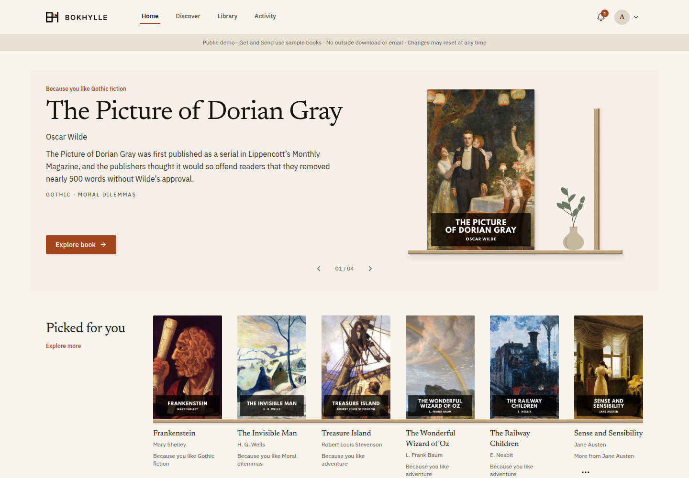
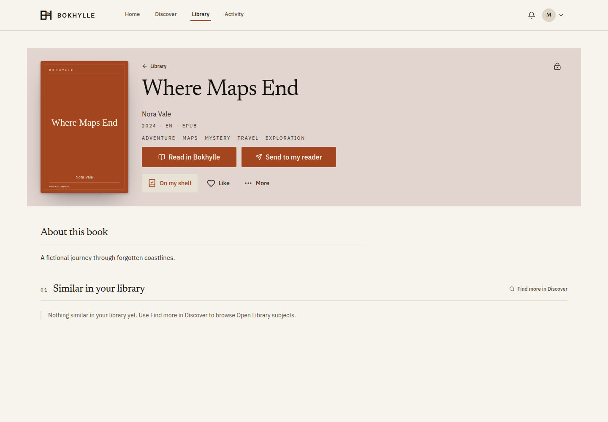
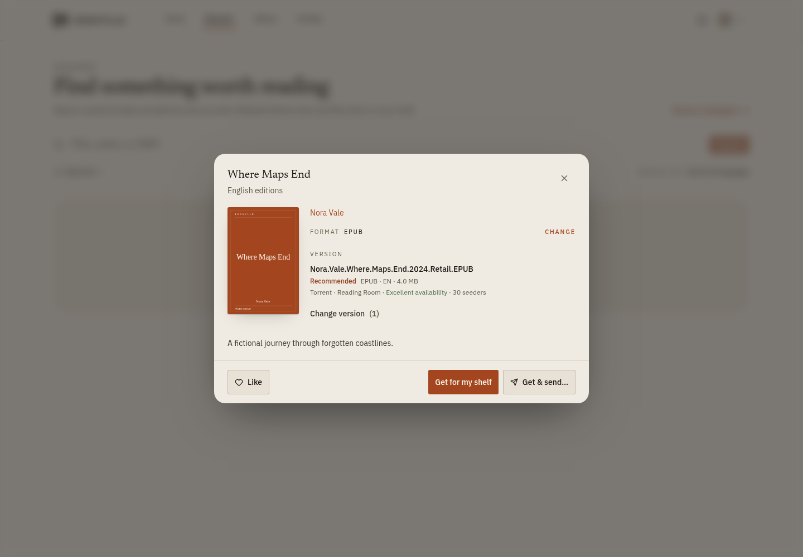

Find the next book
Search titles and authors, browse configured OPDS catalogues, and find Home suggestions shaped by your own shelf, likes, and interests.

A SELF-HOSTED BOOKSHELF № 01
Keep your household's books together, with a personal shelf for each reader. Discover your next book, read EPUB, PDF, and CBZ here, or send a file to your reading device.
Public beta. One click to enter. Sample classic books. No account required.
Your shelf, likes, reading interests, and followed authors shape Home suggestions. Saved picks appear as you arrive, with fresh recommendations prepared in the background for your next visit. Return to a book you have been meaning to read, or find something new.

Set a sharing default for books you add, and browse titles shared with your household. Adding someone’s shared book to your shelf does not give you control over its sharing. Each adult keeps a private personal shelf and reading progress.

Open a book to read in Bokhylle or send to your reader. Its sharing marker stays visible at the top right of the book header; owners can open it to change sharing. Download and occasional management actions are under More. Mobile spreads the Shelf, Like and More icons across the full width; desktop keeps their labels together. Small uppercase subjects stay with the book details, with a compact expansion control, and pending downloads show their progress and Send when ready. This example book is fictional.

Read in the browser with saved progress. Adjust EPUB text and reading colors, search the book, and pick up where you left off on another device.

Pick your profile, enter your PIN or password, and return to your own shelf. Keep your initials, choose a Bokhylle profile mark, or use a personal photo. The example profiles are fictional.
For children, adults choose starting books and decide whether they can search or explore for more. Children read from assigned shelves; requests need adult approval. Public catalogue search is not age filtered.

Choose a download preference: let Bokhylle pick the best suitable file, or see available versions when opening a book. Review one proposed copy, then use Change version to compare alternatives. Uncertain matches need deliberate review. Choosing a version returns to the book; Get starts the download. Get & send opens reader setup when you need it. Find another version under More keeps existing files and reading progress. These example releases are fictional.

Search titles and authors, browse configured OPDS catalogues, and find Home suggestions shaped by your own shelf, likes, and interests.
Start with local EPUB, PDF, and CBZ files. Add a watch folder, direct links, or optional acquisition services when you need them.
Read EPUB, PDF, or CBZ in Bokhylle, download a file, send a book to your Kindle, or connect a compatible reader with OPDS and KOReader sync.
Connect a compatible AI assistant with the Model Context Protocol (MCP) to search books, explore your shelf, and check reading progress. With write access, it can also get or request books and send them to your configured reader. Each connection follows your profile's permissions. See assistant setup.
Explore 26 sample classics through separate adult and child views. Try Get and Send with prepared samples; nothing is downloaded from outside or emailed. Changes are temporary.
Open the demo